Em andamento
Engenharia de Software
UniCesumar
Formação voltada à construção de software, da análise de requisitos à arquitetura, qualidade e manutenção de aplicações. Uma base para desenvolver soluções organizadas e sustentáveis.
Em andamento
Sistemas para Internet
Universidade Estadual de Goiás · UEG
Formação com foco no desenvolvimento de aplicações para a web, conectando programação, interfaces e dados. Os projetos acadêmicos ajudam a transformar os conceitos em experiências práticas.
Certificados DIO
31 certificados de cursos, módulos, projetos e mentoria concluídos em 2024 e 2025, organizados em um único PDF.
Java: fundamentos e linguagem
Sintaxe, estruturas condicionais e de repetição, ambiente de desenvolvimento e tratamento de exceções.
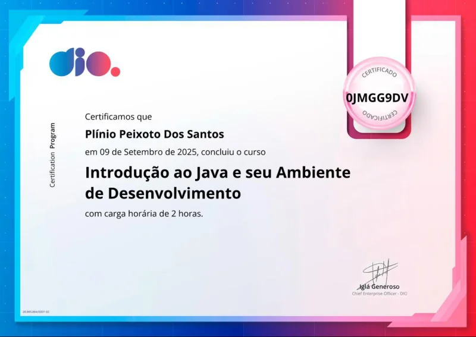
Java: orientação a objetos e UML
Abstração, pilares da orientação a objetos, Collections, Stream API e modelagem de um iPhone com UML.
Banco de dados: SQL e NoSQL
Introdução a bancos relacionais e não relacionais e módulo Primeiros Passos em SQL e NoSQL.
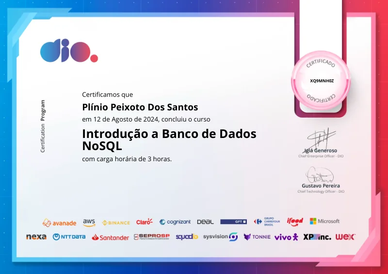
Git, GitHub e desenvolvimento de software
Versionamento de código, contribuição em projeto open source e princípios de desenvolvimento de software.
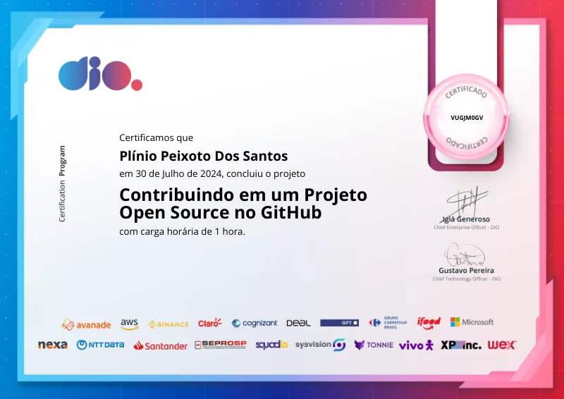
Lógica e desafios de programação
Desafios de código, simulação de conta bancária, validação de processo seletivo e abstração no domínio bancário.
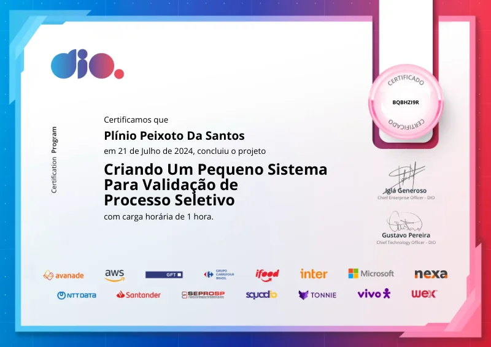
Carreira e organização dos estudos
Roadmaps com Notion, criação de portfólio, onboarding e introdução aos bootcamps da DIO.
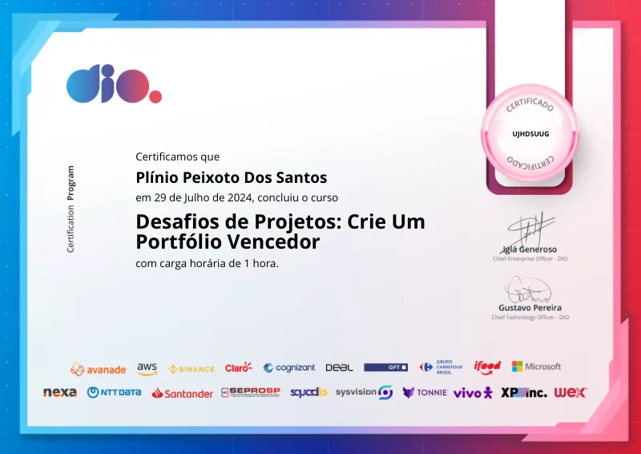
Fundamentos de Computação em Nuvem
Conhecimentos em cloud, abordando conceitos e fundamentos de computação em nuvem.
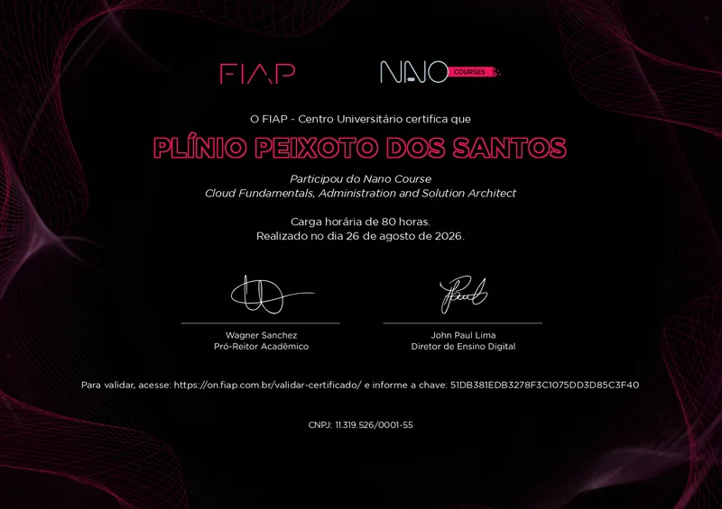
Imersão Digital - Trilha de Aprofundamento: DevOps
Práticas de DevOps envolvendo Linux, automação, Git, CI/CD, Docker,
Kubernetes, monitoramento e infraestrutura em nuvem.
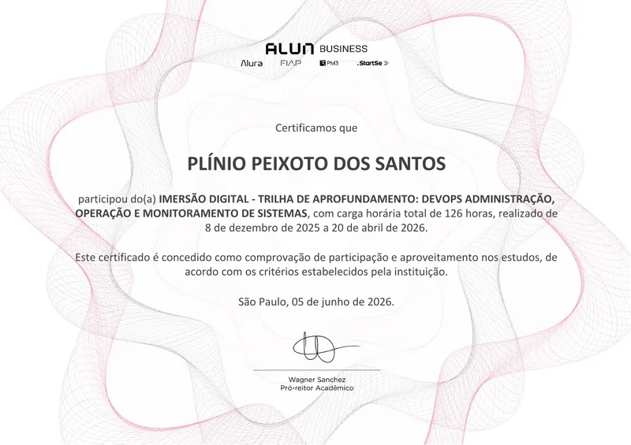
DevOps
DevOps, Linux, Rede de computadores, SLF4J, Docker,
Kubernetes e API REST.
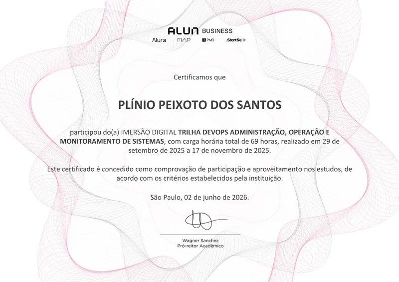
Certificações Alura
Conjunto de cursos concluídos na plataforma Alura, abrangendo formações em
DevOps, Linux, Git, Docker, Kubernetes, CI/CD, GitHub Actions e
Observabilidade.
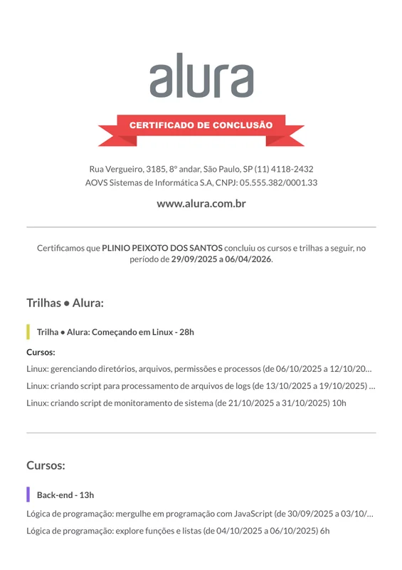
BootCamp Back-end ADATECH
Bootcamp de desenvolvimento Back-end, com foco em Java, Spring Boot pela Adatech.
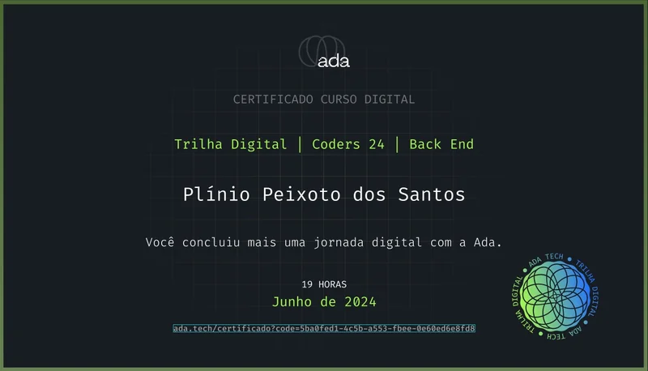
Inglês Britânico
Formação em inglês britânico com foco em comunicação, leitura, escrita e compreensão para o ambiente profissional.
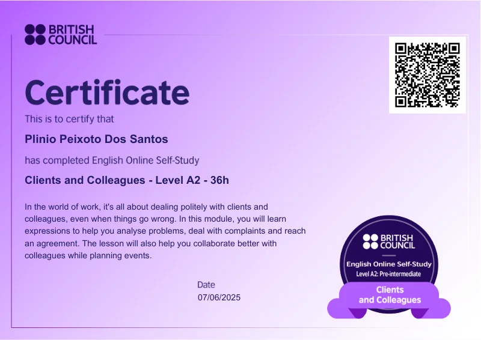
AWS Lambda Foundations (Português)
Curso sobre fundamentos do AWS Lambda, cobrindo computação serverless,
criação e configuração de funções e integração com outros serviços da AWS.
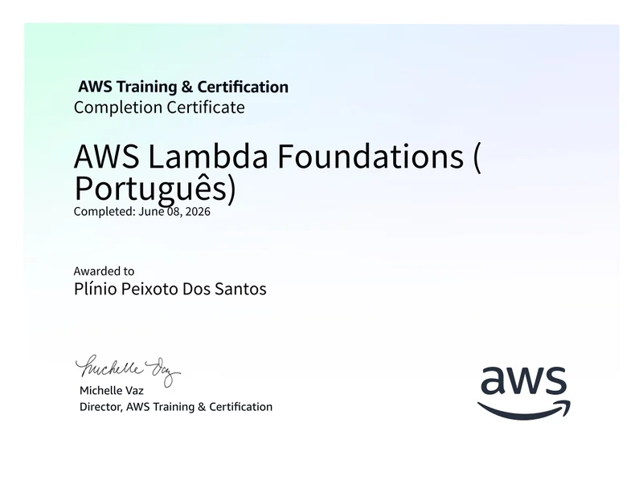
Claude Platform 101
Introdução à plataforma Claude, abordando fundamentos de uso de modelos de IA
e boas práticas para integração em aplicações.
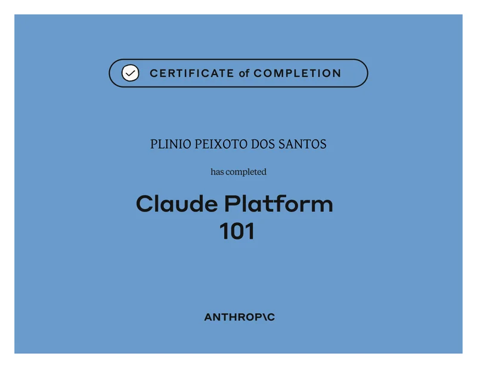
Nano Course: Engenharia de Software
Curso rápido sobre fundamentos e práticas de Engenharia de Software.
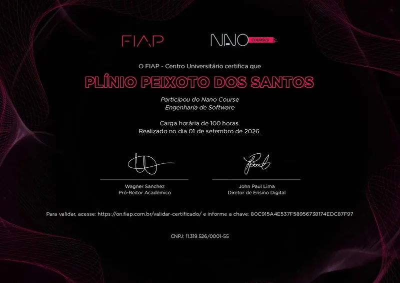
Sensibilização para a Segurança Digital
Curso introdutório sobre conceitos e boas práticas de segurança digital.
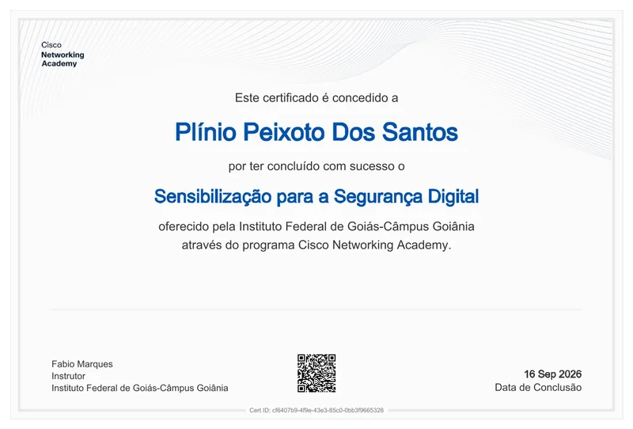
AWS Cloud Practitioner
Certificação concluídaComprovante ainda não disponibilizado neste portfólio.
Certificação AWS voltada para fundamentos de computação em nuvem
CPA-20
Certificação concluídaComprovante ainda não disponibilizado neste portfólio.
Certificação financeira pela ANBIMA
Vamos nos conectar?
Encontre meu código, acompanhe minha trajetória ou entre em contato para conversar sobre oportunidades.
GitHub
Projetos e RepositóriosLinkedIn
Vamos nos conectar!Email
Entre em contatoWhatsApp
Vamos conversarAlém do código: interesses e redes pessoais
Spotify
Minha playlist favorita para programarLetterboxd
Julgando tudo que eu vejo!Discord
Bora uma callzinha?Valorant
Confira o melhor platina do Vava